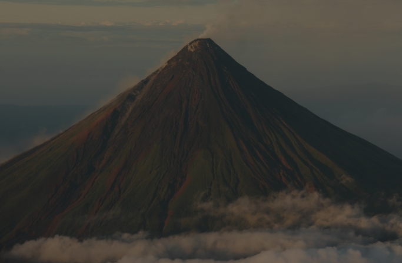

Iconic Wonders
Journey through three of the Philippines’ most magnificent natural treasures, each telling unique tales of heritage and beauty.

Banaue Rice Terraces
Hand-carved by Ifugao over 2000 years ago. Using sustainable methods passed down for generations.

Mayon Volcano
A perfect cone rising 2,463m above sea level. Famous for its near-symmetrical shape and legends.
Tubbataha Reef
UNESCO World Heritage marine paradise teeming with life beneath the seas.